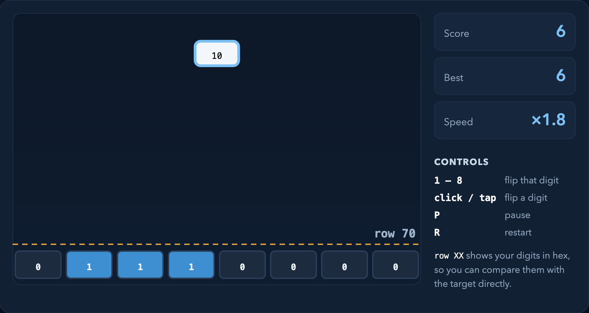

把一片充电站模拟成分布式传感网络：充电站拥堵时先问邻居，邻居也满了，再请基站推荐最近的空闲站。
| 节点方案 | 每节点每周期消息数 | 关停耗时 |
|---|---|---|
| N1 · 每周期阻塞 Sendrecv | 3.39 | 277 ms |
| N2 · 非阻塞、按需触发（选用） | 1.97 | 84 ms |
| N3 · 每周期 Neighbor_allgather | 3.39 | 279 ms |
从串行版本出发，依次写出 Pthreads、OpenMP、MPI 和 MPI+OpenMP 混合版本，每一步都先测量、再优化。

十六进制数字不断下落，玩家要在它落到虚线前，把底部 8 个二进制位翻成同一个值。
读入一段约束建模语言，解析成语法树，检查名字和作用域，再求出全部可行解或最优解。
int: n = 6; array[1..n] of var 1..n: q; constraint allDifferent(q); constraint allDifferent(i in 1..n)(q[i] + i); constraint allDifferent(i in 1..n)(q[i] - i); solve satisfy;
[("q[1]",2),("q[2]",4),("q[3]",6),
("q[4]",1),("q[5]",3),("q[6]",5)]
… 共 4 组解
从 2025 年 12 月起一个人持续开发两套研究工具链，并有实盘交易经验。数字资产工具链先用 Python 搭建，遇到延迟瓶颈后经对比测试迁移到 Rust。下面只展示工程结构，策略细节和收益不公开。
用 GPU 并行旋转图片：一个线程负责一个输出像素，按逆映射去原图取像素，每个线程只写自己的位置，不需要原子操作。